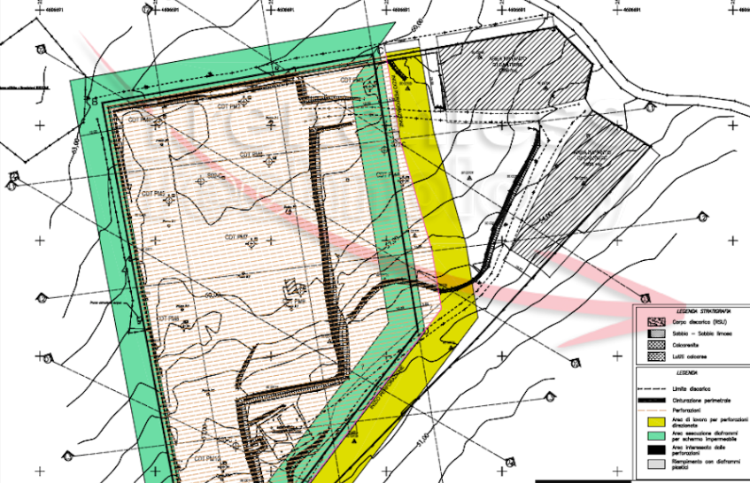

About Me

Civil engineers are designers. Functionality and precision were paramount. Problems were overcome using logic and creative thinking.
The creation of web apps is much like engineering design. The efficient, logical approach can be used in coding and developing the back end technology. But now, let's add the aesthetic elements.